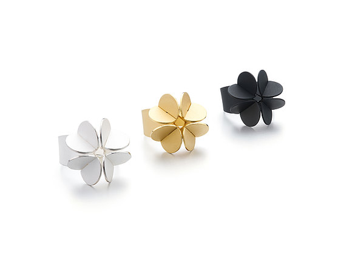
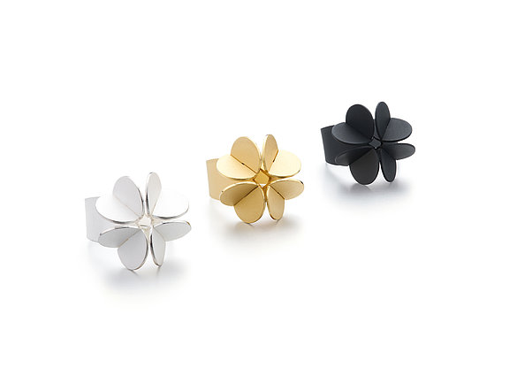
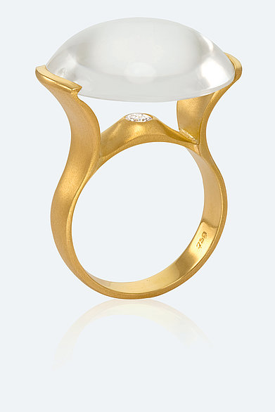
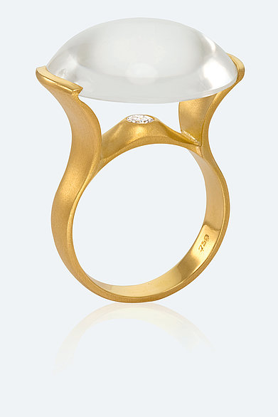

schüller design
Ringe – individuell, modern, zeitlos und dazu nachhaltig und ressourcenschonend * Verliebt – verlobt – verheiratet. Anlässe, die Verbundenheit ausdrücken und manifestieren möchten gibt es heute wie damals. Der Ring hat dabei seine Symbolkraft nie verloren. Er spielt auch heute die Hauptrolle beim feierlichen Ritual. Althergebrachte Normen haben sich jedoch überholt. Individualität und persönlicher Ausdruck sind anstelle dessen als moderne Selbstzeugnisse in den Blickpunkt getreten. Bain News Service from the 1900s to the mid-1920s.”
Das Atelier 



 
